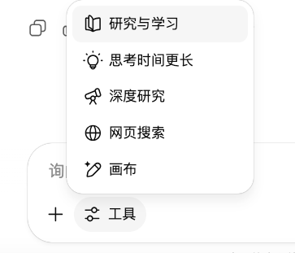
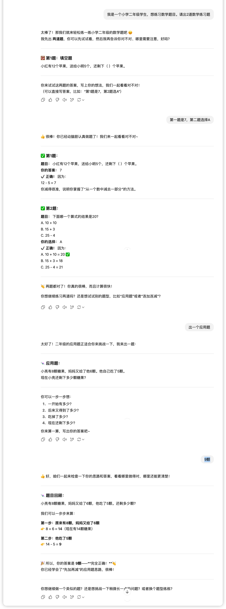

ChatGPT学习模式（study mode）介绍和体验
本文最后更新于 2025年8月5日 晚上
ChatGPT学习模式（study mode）介绍和体验
近期，ChatGPT推出了学习模式（study mode）。不管是iOS、安卓、web或者桌面端都可以使用。免费版本、Plus、Pro版本都可以使用。这个模式也支持中文。
你可以把学习模式当做是一个在线的全科老师，此模式具备交互功能，可以一问一答。或者把ChatGPT当做是“私人学习助手”，家教老师，题库练习机，学习规划师，英语对话伙伴，地理百科全书等等。
这个模式重点在于交互、问答和引导。如果要ChatGPT一次性出一份练习题，可以用普通模式。
下面我们来试一下学习模式（网络不好的情况下请全局开🪜）
先打开ChatGPT的学习模式，本文以网页版为例，工具 - 研究与学习

做题练习模式
先告诉ChatGPT自己的情况，然后要求出对应科目的题目。
例如作为一个小学2年级学生，想要练习数学题目。
告诉ChatGPT：1
我是一个小学二年级学生，想练习数学题目。请出2道数学练习题
ChatGPT的回答：1
2
3
4
5
6
7
8
9
10
11
12
13
14
15
16
17
18
19
20
21
22
23
24
25
26
27
28
29
30
31👍 很棒！你已经动脑筋认真做题了！我们来一起看看对不对\~
---
### ✅ 第1题：
**题目：** 小红有12个苹果，送给小明5个，还剩下（ ）个苹果。
**你的答案：** 7
✔ **正确！** 因为：
12 - 5 = 7
你减得很准，说明你掌握了“从一个数中减去一部分”的方法。
---
### ✅ 第2题：
**题目：** 下面哪一个算式的结果是20？
A. 10 + 10
B. 15 + 3
C. 25 - 4
**你的选择：** A
✔ **正确！** 因为：
A. 10 + 10 = 20 ✅
B. 15 + 3 = 18
C. 25 - 4 = 21
---
👏 两题都对了！你真的很棒，而且计算很快！
你想继续练习两道吗？还是想试试别的题型，比如“应用题”或者“连加连减”？
除了判断答案，还给出了一些简单解析。我们再输入：1
出一个应用题
ChatGPT出了新的题目：1
2
3
4
5
6
7
8
9
10
11
12
13
14
15
16
17
18
19太好了！二年级的应用题正适合你来挑战一下，我来出一题：
---
### 🍬 应用题：
小亮有8颗糖果，妈妈又给了他6颗。他自己吃了5颗。
现在小亮还剩下多少颗糖果？
---
你可以一步一步想：
1. 一开始有多少？
2. 后来又得到了多少？
3. 吃掉了多少？
4. 现在还剩下多少？
你来算一算，写出你的答案吧\~
再输入我们的答案1
9颗
ChatGPT的回答：1
2
3
4
5
6
7
8
9
10
11
12
13
14
15
16
17
18
19
20
21
22
23
24
25
26👍 好，咱们一起来检查一下你的思路和答案，看看哪里做得对，哪里还能更清楚！
---
### 🍬 题目回顾：
小亮有8颗糖果，妈妈又给了6颗，他吃了5颗。还剩多少颗？
我们可以一步步来算：
#### 第一步：原来有8颗，妈妈又给了6颗
👉 8 + 6 = **14**（现在有14颗糖果）
#### 第二步：他吃了5颗
👉 14 - 5 = **9**
---
🎉 所以，你的答案是 **9颗**——\*\*完全正确！\*\*👏
你已经学会了“先加再减”的应用题思路，很棒！
---
你想继续做一个类似的题？还是想挑战一下稍微长一点的问题？或者换个题型练练？
可以看到给出了思路和解析步骤。
对于二年级学生来说，用电脑键盘输入自己的答案可能难度太高，这个打字步骤可以由家长或者老师代为完成。

知识讲解模式
把用户年级告诉他，并且指定要求讲解某一块知识点
比如输入：1
我是初二的学生，讲一讲初二英语的要点
ChatGPT会更新前面的记录，并对应初二英语给出回答1
2
3
4
5
6
7
8
9
10
11
12
13
14
15
16
17
18
19
20
21
22
23
24
25
26
27
28
29
30
31
32
33
34
35
36
37
38
39
40
41
42
43
44
45
46
47
48
49
50
51
52
53
54
55
56
57
58
59
60
61
62
63
64
65
66
67
68
69
70
71
72
73
74
75
76
77
78
79
80
81
82
83
84
85
86太好了，初二是英语学习很关键的一年！我们一起来看看 **初二英语的重点内容**，我会讲得清楚明了，还会穿插小问题帮你检查有没有听懂。
---
## 🧩 一、语法重点
### 1. **时态**
初二最重要的语法是时态，尤其是：
* **一般过去时**：I visited my grandma yesterday.
* **现在进行时**：She is doing her homework now.
* **一般将来时**：I will go to the park tomorrow.
❓小测一下：
句子 “He \_\_\_\_\_\_ (go) to school yesterday.” 应该填什么？
A. goes B. is going C. went
---
### 2. **比较级和最高级**
形容词/副词的比较：
* big → **bigger** → **the biggest**
* carefully → **more carefully** → **the most carefully**
我们通常这样比较：
* A比B高：A is **taller** than B.
* A是最高的：A is **the tallest**.
---
### 3. **动词不定式和动名词**
* like **to play** / like **playing** 都可以表示“喜欢玩”
* want **to do** sth（想做某事）
---
## 🧱 二、词汇和短语
### 常见话题词汇：
* 健康（health）：exercise, illness, medicine
* 环境（environment）：pollution, protect, clean up
* 日常生活：routine, hobby, chores
* 学校：subject, exam, timetable
我们也常学一些 **短语**：
* get up 起床
* take care of 照顾
* be good at 擅长于
* look forward to 期待
---
## 📖 三、阅读理解和写作
### 阅读理解：
要学会：
* 找主旨句（通常在第一段或最后一段）
* 理解细节（用扫读法找具体信息）
* 推理判断（比如作者的观点）
### 写作：
常写话题有：
* 我的朋友 / 我的周末
* 一次难忘的经历
* 如何保持健康 / 爱护环境
句子要简洁，最好有**三段结构**：
1. 开头：引出话题
2. 中间：说明细节
3. 结尾：表达感受或总结
---
你有没有特别想练习的部分？比如“过去时用法”、“短语记忆”、“阅读题技巧”还是“英语写作”？我们可以针对你最想提高的来练！
给出了多个要点。并且继续询问接下来想学习的部分。直接输入“过去时用法”或者“短语记忆”，它就给出对应知识点，并且穿插着一些小练习
1 | |
输出：1
2
3
4
5
6
7
8
9
10
11
12
13
14
15
16
17
18
19
20
21
22
23
24
25
26
27
28
29
30
31
32
33
34
35
36
37
38
39
40
41
42
43
44
45
46
47
48
49
50
51
52
53
54
55
56
57好眼光！短语是英语中的“积木”，句子少不了它，考试也爱考它。那我们就来进入【短语记忆模式】🧠，一边学、一边记！
---
## 🌟 初二常见短语分类记忆法
我会用“场景+短语+例句”的方式，帮助你快速理解并记住。
---
### 📅 日常生活类
| 中文意思 | 短语 | 例句 |
| ---- | -------------- | ----------------------------- |
| 起床 | get up | I get up at 7 a.m. every day. |
| 上学 | go to school | She goes to school by bike. |
| 做作业 | do homework | He is doing his homework now. |
| 吃早饭 | have breakfast | They have breakfast together. |
🔍 小问一问：
你每天几点 **get up**？可以用英文回答我试试看吗？
---
### 🧑🤝🧑 人际关系类
| 中文意思 | 短语 | 例句 |
| ------- | ------------------ | ------------------------------------ |
| 和……相处融洽 | get along with | I get along well with my classmates. |
| 对……友好 | be friendly to | He is friendly to new students. |
| 和……保持联系 | keep in touch with | I keep in touch with my old friends. |
🎯 小练一下：
你还记得“和……相处融洽”怎么说吗？能不能用它说一句话？
---
### 🎒 学习相关类
| 中文意思 | 短语 | 例句 |
| ---- | ------------- | -------------------------------------------- |
| 擅长 | be good at | She is good at math. |
| 准备…… | get ready for | I’m getting ready for the English test. |
| 查找 | look up | You can look up new words in the dictionary. |
---
## 🎲 小活动：翻译挑战！
我们来玩个小游戏，我说中文，你来翻成英文短语👇
1. 起床 = ?
2. 擅长英语 = ?
3. 做作业 = ?
4. 和妈妈相处得好 = ?
你来试一试，写完我来帮你检查！如果你想，我也可以帮你做一张“短语卡片集”\~
既给出了短语的知识点，又顺手给出了几个小问题。
学习计划模式
除了练习题目和总结知识点，还可以让ChatGPT给出学习计划。
比如我们需要初三的英语学习计划1
我是一个初三的学生，请给一个初三英语的学习计划
输出：1
2
3
4
5
6
7
8
9
10
11
12
13
14
15
16
17
18
19
20
21
22
23
24
25
26
27
28
29
30
31
32
33
34
35
36
37
38
39
40
41
42
43
44
45
46
47
48
49
50
51
52
53
54
55
56
57
58
59
60
61
62
63
64
65
66
67
68
69好的！初三英语很关键，不只是为了中考提分，更是为高中打基础。我们来制定一个**实用又不累的英语学习计划**，每天大概花 **40～60分钟**，重点提升词汇、语法、阅读、写作四大块。
---
## 🗓️ 初三英语一周学习计划（可循环）
### 周一｜词汇 + 语法基础
* 背15个核心单词 + 造句
* 学1个语法点（如：过去完成时、宾语从句）
* 做5道语法题
✅ 建议：用错题本记录不熟的词汇和题型
---
### 周二｜阅读训练
* 做1篇短文阅读（近3年中考题或课外阅读）
* 划出不会的词句，查词典并记录
* 总结主旨、结构、作者观点
✅ 小技巧：先看题目，再带着问题去读文
---
### 周三｜写作专项
* 模仿一篇范文（比如“我的学习计划”）
* 改写或续写一段文字
* 自己写一篇80词左右的短文
✅ 写完后检查：有没有时态错误？有没有短语？
---
### 周四｜听力 + 口语练习
* 听1段材料（可用教材或中考听力真题）
* 复述主要内容
* 和ChatGPT练1段日常英语对话，比如购物、问路等
✅ 听不懂没关系，反复听，跟读也有效！
---
### 周五｜综合练习 + 错题复盘
* 做1套小练（含词汇+语法+阅读+写作）
* 整理这一周做错的题和记错的词
* 复习“错题+重点语法+重点短语”
✅ 最关键的是总结，而不是做很多
---
### 周末（自由复习日）
任选内容加强练习，也可以：
* 背中考常考作文模板
* 玩“英汉互译”小游戏
* 看一小段英文动画或新闻（字幕+听力）
---
如果你告诉我你每天有多少时间、想重点练哪一块（比如阅读、作文），我可以再帮你**定制一个更详细的计划表**！
要不要试试？💡
ChatGPT会生成一份详细的计划和对应的建议。
小结
据笔者初步体验来看，这个学习模式也适合老师和家长去给孩子辅导学习。
如果让孩子直接给ChatGPT输入指令，孩子可能会采取“投机取巧”的办法，比如直接要答案。家长老师在一旁辅助，学习效果可能会更好。也就是ChatGPT成为家长老师的辅导帮手。
本文体验了小学和初中的数学、英语内容。其他科目内容，以及高中甚至大学内容，这个模式的适用性还有待探索。
可以肯定的是，小学阶段的日常教学内容对ChatGPT来说是可以应付的。